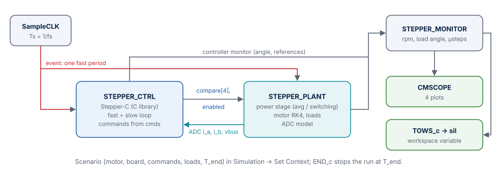

Software in the Loop¶
The software-in-the-loop (SIL) diagram runs the real C code of Stepper-C — the same sources that go into the firmware — against the motor model in Xcos. It is the place where a user without Scilab knowledge sees the library control a motor: open one file, press Start, watch currents, speed, load angle and position. It is also a test bench: S01–S04 compare it sample by sample with the Scilab prototype.
Start here¶
- Install Scilab 2027 and, on Windows, Visual Studio 2022 or the free Build Tools with the workload Desktop development with C++.
- Clone Stepper-C into the folder
sfs-stepper-ctrlnext tosfs-stepper-sim(or set the environment variableSSTEP_CTRL_DIRto it). - Open
start_sil.scein Scilab and press F5. - Xcos opens
xcos/stepper_sil.zcos. Press Start (▶).
The default scenario moves the motor two revolutions (6400 microsteps at 1/16) with 5 rev/s and 50 rev/s² on the B-G431B-ESC1 at 24 V. The scope shows four plots: the phase currents with their references, the speed in rpm, the load angle in electrical degrees (above 90° the motor is close to losing steps) and the commanded and real rotor positions in microsteps.
start_sil.sce has two settings at the top:
| Variable | Values | Effect |
|---|---|---|
sil_backend |
"FIXED" (default), "FLOAT" |
numeric backend of the compiled library; switching needs a Scilab restart |
sil_regenerate |
%f (default), %t |
%t builds the diagram again from xcos/sil_diagram.sci (needed after a change of the block interfaces) |
The diagram¶

| Block | Computational function (C, type 4) | Inputs → outputs | Parameters |
|---|---|---|---|
SampleCLK |
Xcos | → event every Ts = 1/fs |
Ts |
STEPPER_CTRL |
sstep_xcos_ctrl |
ADC [i_a i_b vbus] (counts) → [compare(4) enabled], monitor [φ position velocity state faults iA* iB*] |
sil_ctrl_rpar(mot, brd, ctl, mp, cmds) |
STEPPER_PLANT |
sstep_xcos_plant |
[compare(4) enabled] → ADC sample, [iA iB ω θ vA vB |iA|max |iB|max] |
sil_plant_rpar(mot, brd, loads, locked, 4) |
STEPPER_MONITOR |
sstep_xcos_monitor |
plant + controller monitor → currents, rpm, load angle, positions, 12 values for the workspace | [mot.Ns, mp.M] |
CMSCOPE |
Xcos | 4 plots | ranges from the context |
TOWS_c |
Xcos | → workspace variable sil |
buffer N_log |
END_c |
Xcos | stops at T_end |
T_end |
What the controller block does. At initialisation it builds a struct sstep_config
from the parameter vector, calls sstep_init() (a configuration error stops the
simulation with the library's status text) and sstep_enable(). On every clock event it
applies the commands whose time has come, calls sstep_slow_loop() every ratio
events, converts the ADC input to a struct sstep_sample, calls sstep_fast_loop() and
outputs the compare values the library wrote through its pwm_write callback.
What the plant block does. It integrates the motor over one PWM period with the leg
voltages of the previous period (the one-period computation delay of the MCU), using
the averaged or the switching power stage (brd.stage), applies the load torque steps,
and models the ADC: counts = round(zero + i / i_full · span), clamped to
0 … adc_full, and the bus voltage reading.
Scenario: the diagram context¶
The scenario is edited in Simulation → Set Context and evaluated before each run:
| Variable | Meaning | Example |
|---|---|---|
mot |
motor parameters | mot.Td = 0.02; mot.Tc = 0.01; (detent, dry friction) |
brd |
board and power stage | brd.topology = "full"; brd.stage = "switching"; brd.vbus = 36; |
ctl |
current controller | ctl.bw_hz = 500; |
mp |
microsteps, speed and acceleration limits, run / hold current | mp.v_max = 25600; mp.i_run = 1.5; |
cmds |
commands [t kind value]: 1 MOVE to (µsteps), 2 RUN (µsteps/s), 3 STOP |
[0 2 12800; 0.15 2 -12800] |
loads |
load torque steps [t TL] (N·m) |
[0 0; 0.15 0.25] |
locked |
1: rotor locked (current loop test) | 1 |
T_end |
simulated time (s) | 1.0 |
scope_i, scope_rpm, scope_pos |
scope ranges | 3, 400, 7000 |
Lines below // derived values (do not edit) compute Ts and the workspace buffer size.
A command the library rejects (for example a RUN above v_max) stops the simulation with
the command number, its time and the status text.
Results in the workspace¶
After a run the variable sil holds sil.time and sil.values with one row per PWM
period:
| Column | Quantity | Unit |
|---|---|---|
| 1, 2 | iA, iB (sampled) |
A |
| 3, 4 | iA*, iB* (references) |
A |
| 5 | speed | rpm |
| 6 | load angle | electrical ° |
| 7, 8 | commanded position, rotor position | µsteps |
| 9, 10 | vA, vB (averaged voltage of the next period) |
V |
| 11, 12 | largest |iA|, |iB| within the period (with the ripple when switching) |
A |
Build and rebuild¶
sil_build(backend, force) copies the library sources and sil/c/sstep_xcos.c into
sil/build/<backend>/, compiles them with the compiler Scilab finds
(tbx_build_src; Visual Studio on Windows, gcc on Linux) with
-DSSTEP_CFG_MATH_BACKEND=…, and links the shared library. The build happens once; it
is repeated automatically when any source file differs from its copy in the build folder.
sil/build/ is ignored by Git.
The library is searched in this order: SSTEP_CTRL_DIR, the submodule
ext/sfs-stepper-ctrl, the sibling folder ../sfs-stepper-ctrl.
Agreement with the prototype¶
| Test | Scenario | Criterion | Result |
|---|---|---|---|
| S01 | current step 0 → 2 A, locked rotor | currents within 5 mA of the prototype | fix of an empty-command case applied; result of the re-run pending |
| S02 | move 640 µsteps | currents < 5 mA, commanded angle identical, rotor < 0.05 µstep | 1.05 mA, angle identical, rotor 0.0075 µstep |
| S03 | 8 rev/s, both topologies | current amplitude as the prototype (T09) ± 30 mA | 1.862 A (two H-bridges), 1.557 A (shared leg), equal to the prototype |
| S04 | run 4 rev/s with the switching stage | currents and peak current within 5 mA | new in this version; first run pending (the C plant equals the Python twin to 4·10⁻¹⁶) |
The remaining difference comes from the quantisation the prototype does not have: ADC counts, Q15 arithmetic and integer compare values.
Troubleshooting¶
| Symptom | Cause | Remedy |
|---|---|---|
| "No C compiler found by Scilab" | Visual Studio / Build Tools missing | install the C++ workload, restart Scilab |
| "Stepper-C sources not found" | library not next to the simulation | set SSTEP_CTRL_DIR |
| "wrong parameter vector (use sil_plant_rpar)" | diagram older than the blocks | set sil_regenerate = %t once, or delete xcos/stepper_sil.zcos |
| Changes in the C code have no effect | the old DLL is still loaded | restart Scilab (the build is redone automatically) |
| "The FIXED library is already linked … Restart Scilab to switch to FLOAT" | backend changed in a running session | restart Scilab |
| "Stepper-C: sstep_init failed: …" | configuration rejected by the library | the message names the status; check the context values |
| Link warnings when the diagram is generated | Xcos versions before the fix of the scope ports | regenerate the diagram with the current sil_diagram.sci |